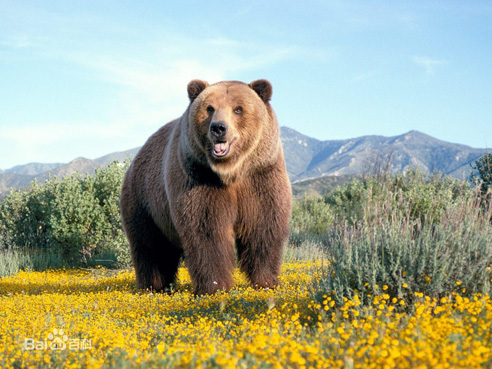
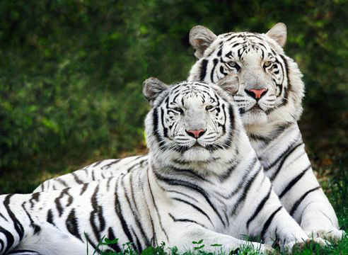
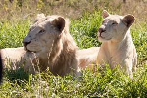

动物世界 |
|
|  |
熊（英文名称：Bears）：是食肉目熊科动物的通称，熊平时还算温和，但是受到挑衅或遇到危险时，容易暴怒，打斗起来非常凶猛。虽然一般人把熊看做是危险的动物，但在马戏团或动物园中，却是相当受人喜爱的。分布在北半球。在南半球，除了南美洲北部外，其他地方没有它的踪迹。熊科是个大家族，可分为五属：大熊猫属、懒熊属 、眼镜熊属、马来熊属、熊属。 熊躯体粗壮肥大，体毛又长又密，脸形像狗，头大嘴长，眼睛与耳朵都较小，臼齿大而发达，咀嚼力强。四肢粗壮有力，脚上长有5只锋利的爪子，用来撕开食物和爬树。尾巴短小。熊平时用脚掌慢吞吞地行走，但是当追赶猎物时，它会跑得很快，而且后腿可以直立起来。 |
|
 |
虎，别名：老虎，拉丁学名：Panthera tiger 英文：Tiger，是大型猫科食肉动物，被人们称为森林之王，老虎对环境要求很高，适应环境能力强，因为人类捕杀和栖息地的缩小而数量稀少，在亚洲分布很广，老虎不但是亚洲北部顶级的猫科动物，也是目前地球上强大的陆地肉食动物之一，老虎在森林里没有敌手。现在从北方寒冷的南西伯利亚地区，到南亚的热带丛林，及高山峡谷等地，都能见到其强壮的身影。 虎强壮高大，毛色从北而南呈黄色到红色渐变，有深色条纹。不同于狮子吻长所以脸廓狭长的特点，老虎吻部较短，显得头大而圆。 现就最大、最小两极的老虎外形做个介绍。其余的毛色、体形都介于中间，以此类推。 |
|  | 狮 英文名：Lion，是一种生存在非洲和亚洲的大型猫科动物，，体重可达180公斤至280公斤，体长1.9至2.7米，世界上发现最大的野生非洲狮体全长3.5米，重342公斤，尾长90cm。母狮的毛发短，体色是茶黄色。不同的是雄狮还长有很浓密的鬃毛。雄狮鬃毛发达，体格强壮，现代狮子有13个亚种。狮子是速度与力量完美结合的化身，地球上的超级大猫。被称为万兽之王。 |